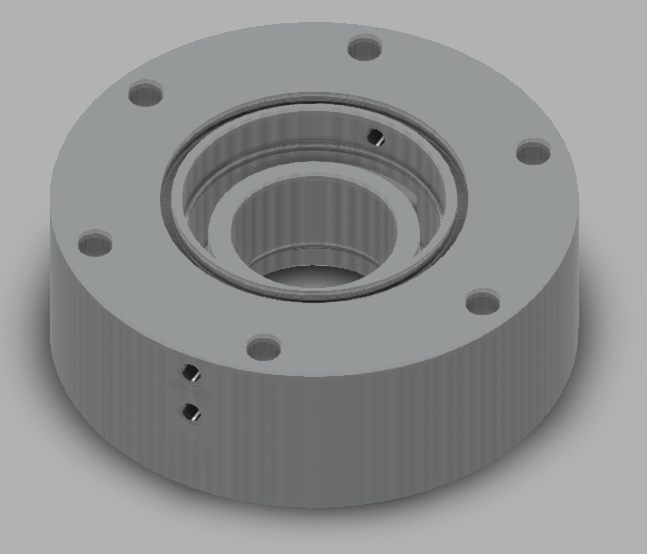

Summer Undergraduate Researcher — Boies Lab
JUNE – SEPT 2026STANFORD SCHOOL OF ENGINEERING
The Boies Lab makes carbon nanotubes in a floating-catalyst CVD reactor: gas flows through a tube inside a 1300 °C furnace, and the nanotubes form in the gas stream. My question was whether injecting against that flow (counterflow) instead of with it (main-flow) changes how much the reactor produces, and where along the tube the injector should sit.
- WHAT I DID
- Ran repeated experiments with a PhD collaborator, comparing counterflow and main-flow injection and moving the injection point along the tube.
- RESULT
- Counterflow injection raised CNT production to 216 mg/hr. The best injection point was 28.3 cm.
- HARDWARE
- Designed the quartz-tube flange assemblies in Fusion 360, including sealing geometry and injector-tube integration for high-temperature service. The design builds on the lab's earlier Flange v2.

